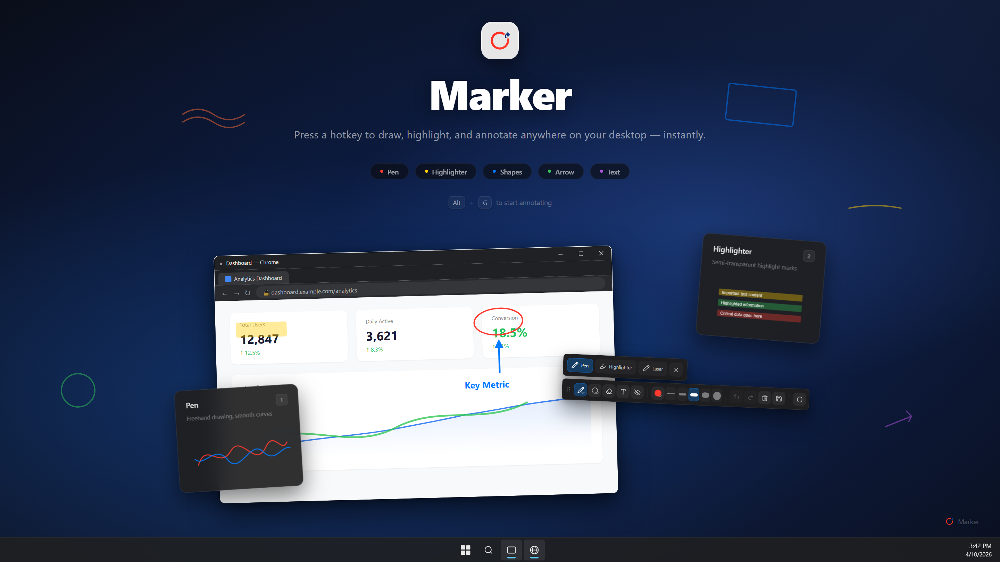
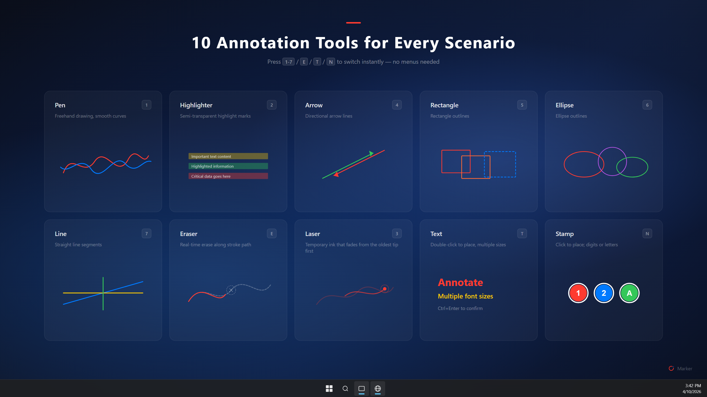
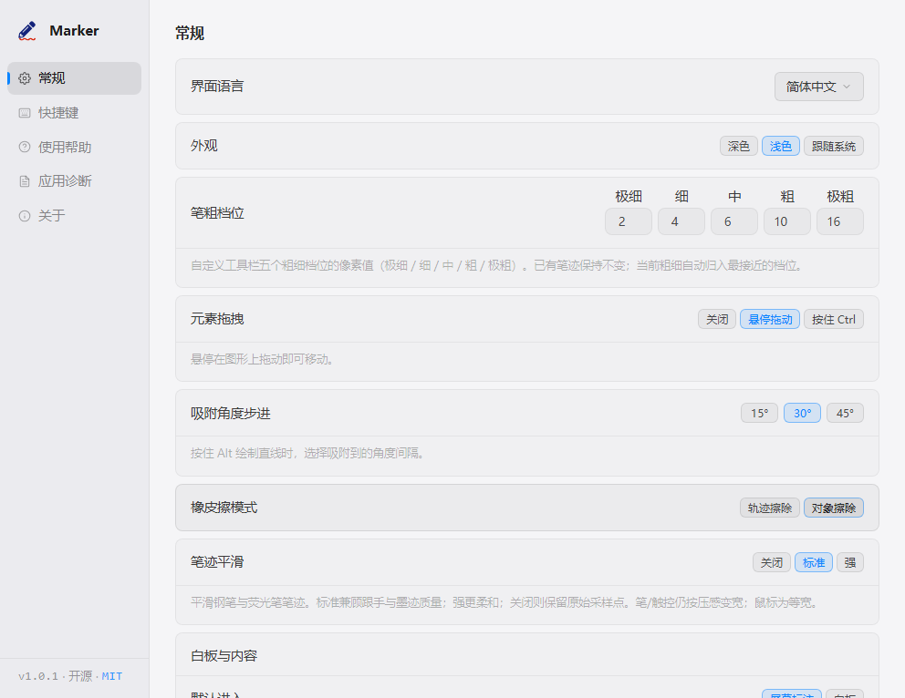

Press AltG and start drawing over any app.

Open source / Tauri v2 / ~1.5 MB
Marker
A keyboard-first screen annotation tool for demos, teaching, meetings, and recordings. Draw over any app; press V to hide your marks when you need to work underneath.
- Keyboard-first drawing tools
- Hide / show annotations
- Whiteboard mode
- Win / macOS
Runs in the tray — no account, telemetry, or cloud dependency.
Shortcuts, angle snapping, custom widths, undo/redo — no menus required.
Built for live explanation
Keep the screen moving while your marks stay put.
Hide / show annotations
Press V to temporarily hide all annotations while you interact with apps below, then press again to bring them right back.
Keyboard-first tools
Number keys plus E/T/N switch tools; S toggles cursor / annotate. Ctrl+scroll adjusts width. Q/R cycle colors. Copy and clear without opening menus.
Whiteboard when needed
Press W for a clean board, keep content between sessions, and copy as an image for docs or chats.
Product surface
Annotation tools

Pen, highlighter, laser, arrow, shapes, eraser, text, stamp, and colors.
Product surface
Settings panel

Toolbar, whiteboard, drag modes, shortcuts, and startup.
- Enter AltG
- Toolbar Space
- Board W
Get started
Download Marker or read the FAQ.
Official installers and quick answers when comparing screen annotation tools.
Official downloads
Common questions
What is Marker for?
Live screen annotation for demos, teaching, and meetings — keyboard-first tools built in.
How do I interact with apps below my annotations?
Press V to hide all annotations, use the app underneath, then press again to restore.
Account or cloud upload?
No. Local-first, open source, and account-free.